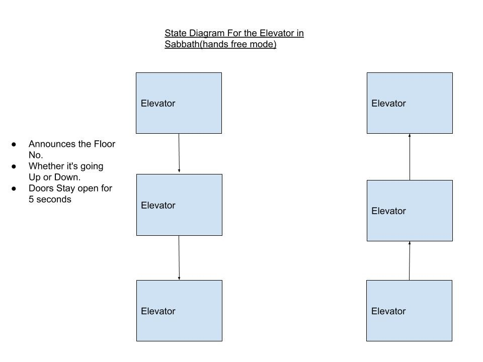
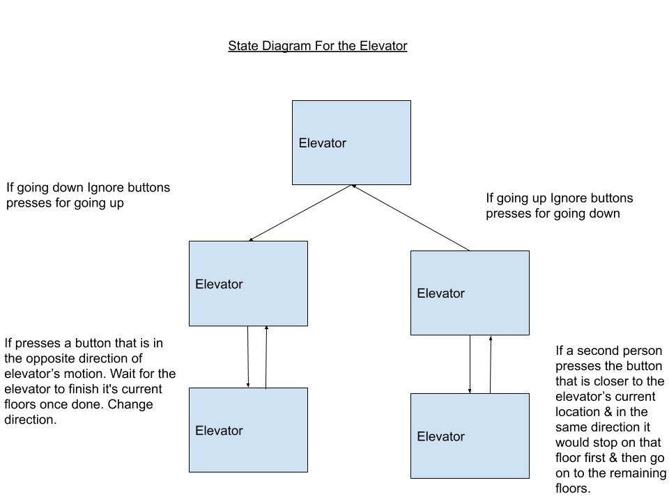
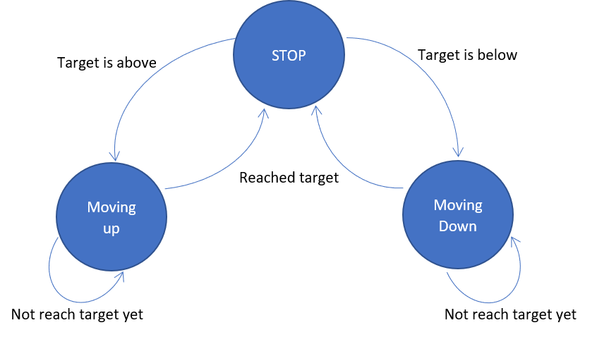
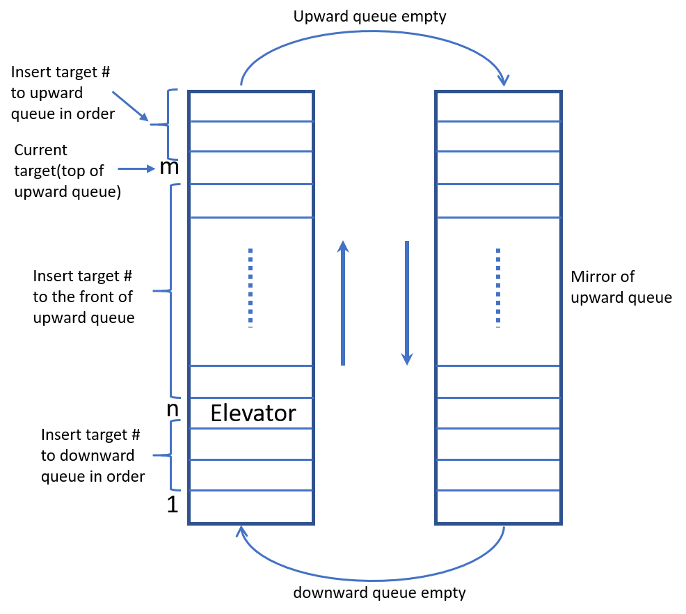

Figure 1: State Logic Diagram for Sabbath Mode
As its hands-free mode this means that people would not touch any buttons to control the elevator. In
that
case the elevator should keep on working Autonomously.
It should alternately go up and down.
On each floor (before the doors open) It will announce which floor its on, whether its going up or down
and
the duration of time the doors will stay open.
We additionally ask it to give out more commands like asking people to move in a line & staying calm &
all.
These announcements should be made both inside and outside the elevator, so that people on both sides
could
hear them.
Normal Mode

Figure 2: State Logic for Elevator in Normal mode
First, of all ignore button (outside presses) if the button pressed is in the opposite direction of
elevator's current direction. Save them somewhere to remember to come back to that floor.
If there are two people in the elevator and one wants to go the 6th floor and the other wants to go to
3rd
floor. The 3rd floor person pressed the button after the 6th floor person (assuming elevator is on the
first
floor). Go to the closes floor first in the same direction. i.e go for 3rd floor first then the 6th
floor.
If the elevator was on the 4th floor and was going up, then go to 6th floor first then 3rd floor.
Basic State Logic

Figure 3: Finite States Logic
Elevator's next target will be determined from the upward queue and downward queue. (see details in next
section)
When elevator is at stop state, it will move to moving-up or moving-down state according to its next
target.
When elevator is at moving-up or moving-down state, it will keep checking its location. If location
reaches,
move to stop state.
Target Setting Algorithm

Figure 4: Elevator Target Setting Algorithm
There will be 2 queues: upward queue and downward queue. There are mirror in terms of ways to insert and
delete.
In a situation of elevator moving up, if new floor request k is between current floor n and target floor
m,
k will be inserted into the front of the case and become the next target.
If new floor request k is smaller than current floor n, k will be inserted to downward queue in order.
If new floor request k is larget than target floor m, m will be inserted to upward queue in order.
When upward queue is empty, next target will be the head of the downward queue, which is in descending
order.
Except floor 1 and top floor, each floor outside has an upward button and a downward button.
If the pressed button has same direction as elevator moving direction, according to the floor number, it
will be treated as point 2, 3, 4.
If direction is different, floor number will be inserted to opposite queue in order.